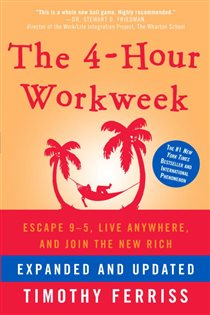

Library › Productivity
The 4-Hour Workweek — Summary & Key Lessons

Escape 9–5, live anywhere, and join the New Rich — the DEAL framework that started the lifestyle-design movement.
📖 OPEN THE FULL INTERACTIVE BREAKDOWN →🌐 Read it in Hindi, Hinglish, Gujarati, Tamil & 22 more languages — free, with audio.
💡 The Big Idea
Ferriss's heresy: the deferred-life plan (grind decades, retire at 65) is a losing trade — and 'wealth' is mismeasured. The New Rich optimize for the real currencies: time and mobility, using the DEAL system. DEFINE: replace vague dreams with costed 'dreamlines' and conquer fear by defining it precisely. ELIMINATE: apply 80/20 and Parkinson's Law to amputate the 90% of work that produces nothing — including most email, meetings, and information consumption. AUTOMATE: build a 'muse' — a low-maintenance income stream — and outsource ruthlessly. LIBERATE: escape the office (remote first, then fully mobile) and take mini-retirements now, while the knees still work. Less is not laziness; the goal is being productive, not busy.
🧠 The 6 Key Lessons
Lesson 1: Define: Fear-Setting Beats Goal-Setting
Step I: D is for Definition
Most people stay stuck not from lack of goals but from undefined dread — the vague fog of 'what if it all goes wrong' is scarier than any actual outcome. Ferriss's fear-setting exercise dismantles it on paper: define the nightmare in detail (what's truly the worst case?), rate its permanence (usually 3–4/10 and reversible), list how you'd recover, and weigh it against the cost of inaction (always the largest number — the 10/10 slow catastrophe of staying put for decades). Then flip to dreamlines: convert fuzzy wishes into specific 6- and 12-month targets with monthly price tags — most dreams cost far less than assumed, measured as Target Monthly Income rather than a mythical million. Unreasonable goals are often EASIER: the competition is thinner at the top because everyone else aimed 'realistic.'
📖 Example: Ferriss's own fear-setting saved his company and sanity: burned out and trapped in his supplement business, he catastrophized a month away as ruin — the written worst case turned out to be 'mild, temporary, and fixable,' while the cost of NOT going was… Read the full example →
⚡ Do this: Do fear-setting tonight on your biggest avoided move: three columns — worst cases, prevention, recovery — plus the cost-of-inaction paragraph. Then price two dreamlines: exact monthly cost, exact target date.
Lesson 2: Eliminate: 80/20 Plus Parkinson's Law
Step II: E is for Elimination
Time management is the wrong goal — most of what's managed shouldn't exist. Two blades cut together: Pareto's Law (80% of results flow from 20% of efforts — identify which customers, tasks, and relationships produce nearly everything, and which produce nearly nothing but consume you) and Parkinson's Law (work expands to fill the time allotted — an 8-hour day fills with 8 hours of theater regardless of substance; brutal deadlines force essence). The combined discipline: shorten the time to shrink the work to the vital few. Add the low-information diet (news, feeds, and most inputs are eliminable with zero life impact — Ferriss reads headlines never, checks nothing 'to stay informed'), and learn selective ignorance as a skill equal to learning itself.
📖 Example: Ferriss's customer audit is the template: analyzing his supplement business, a handful of customers produced almost all revenue while a few chronic complainers consumed most support time at a loss — he 'fired' the painful minority, put the rest on autopilot… Read the full example →
⚡ Do this: Run both audits this week: list tasks/clients by results produced — cut or renegotiate the bottom feeders. Then halve one recurring deadline deliberately and watch the work compress to its essence. Start a 7-day media fast: no news, no feeds.
Lesson 3: The Puppy Dog Close & Batching: Escape the Interruption Economy
Step II: The End of Time Management / Interrupting Interruption
Interruption is the tax on every workday: email checked constantly, meetings without agendas, and 'got a minute?' colleagues shred the day into confetti. Countermeasures: BATCH everything batchable (email at set times daily — then weekly; errands monthly; the setup cost of task-switching makes frequent small sessions wildly expensive), deploy autoresponders that train senders ('I check email at 12 and 4'), force agendas and end-times on any unavoidable meeting, and empower others to decide without you (give rules and spending authority so questions stop flowing uphill). For bigger asks — remote work, new policies — use the puppy-dog close: never request permission for a permanent change; propose a reversible trial ('just two weeks, we can undo it anytime'), then make the trial's results undeniable. Ask forgiveness, not permission, for anything reversible.
📖 Example: Ferriss's outsourcing-of-decisions rule transformed his own company: customer service reps once forwarded him every issue; his new standing order — 'fix anything under $100 yourself, don't ask' — cut his inbox by 80% overnight, and costs barely moved while… Read the full example →
⚡ Do this: Install two email windows daily with an autoresponder announcing them. Batch errands to one weekly block. And write your first puppy-dog proposal: the reversible two-week trial of whatever change you've been afraid to request.
Lesson 4: Automate: Build a Muse and Outsource Your Life
Step III: A is for Automation
Income must be detached from time. The MUSE is Ferriss's vehicle: not a passion-startup consuming your life, but a deliberately boring, automatable product business — find a niche market you know (reach it via specific magazines/channels), design a product with high margin (aim 8–10x markup), TEST before building (run cheap ads to a landing page; measure real purchase intent before manufacturing anything), and once validated, wire the machine: fulfillment houses, payment processing, and customer-service rules that run without you. In parallel, outsource personal and business minutiae to virtual assistants — the point isn't saving money but buying back attention, and learning management by managing a remote assistant is training for running the muse. Rule of the chapter: never automate something that can be eliminated, and never delegate something that can be automated.
📖 Example: BrainQUICKEN, Ferriss's own muse, ran on exactly this architecture: niche audience (athletes), specific channels, outsourced everything — and shrank from 12-hour days to a monitoring role measured in hours weekly. The book's testing gospel came from readers… Read the full example →
⚡ Do this: Draft your muse this month: pick a niche you belong to, list three product ideas, and spend under ₹5,000 testing the best one with ads to a simple landing page. Separately, hire a VA for 5 hours to take your three most hated recurring tasks.
Lesson 5: Liberate: Mini-Retirements and the Art of Filling the Void
Step IV: L is for Liberation
The final unbinding: first escape the office (use the puppy-dog trial to go remote, increase output visibly while remote, then extend — mobility is negotiated in increments), then escape geography entirely. Replace the deferred single retirement with MINI-RETIREMENTS: recurring 1–6 month relocations abroad throughout life, funded by geoarbitrage (earning in strong currency, living in soft — a luxury life in Buenos Aires or Chiang Mai costs a fraction of a cramped one in London). Ferriss's itineraries prove the paradox: travel done slowly costs LESS than staying home. The last chapter faces the honest crisis: with work shrunk and money automated, the void appears — and the answer isn't more leisure but meaning: learning (languages, skills) and service fill what email used to numb. The question 'what will I do with all this time?' is the New Rich's only real problem — and the best one available.
📖 Example: Ferriss's own 15-month experiment: Buenos Aires (tango world championships semifinal), Berlin, Japan — total cost less than his previous San Francisco rent-and-routine, while the automated business grew untouched. Reader case studies repeat the pattern:… Read the full example →
⚡ Do this: Negotiate one remote day via a two-week trial this quarter — then extend on results. Sketch your first mini-retirement: destination, month count, geoarbitraged budget. And pre-answer the void: name the skill you'll learn and the contribution you'll make with the freed hours.
Lesson 6: The 80/20 Life Audit: Find the 20% That Creates Your 80%
Part 2: The Rules
Ferriss applies the Pareto principle to everything: 20% of your clients create 80% of your revenue; 20% of your activities create 80% of your results; 20% of your relationships create 80% of your joy. The audit is ruthless: list everything you spend time on, rank by impact, and identify the low-impact 80% — then systematically eliminate, automate or delegate it. The goal is to concentrate your life on the few activities that genuinely produce results, and to stop pretending that 'busy' equals 'productive'. Most people could cut half their commitments with near-zero loss — the audit reveals which half.
📖 Example: Ferriss describes how one analysis showed him that two clients generated most of his income while eight consumed most of his time — he fired the eight and his income barely moved while his hours collapsed. The Pareto cut wasn't a risk; it was the discovery… Read the full example →
⚡ Do this: Run the 80/20 audit this week: list your top 10 time expenditures in work and life. Circle the two that produce most results — then choose one low-impact item to eliminate or automate this month.
✅ 5-Step Action Plan
- Fear-set your biggest avoided move; price two dreamlines exactly.
- Cut the bottom 20% of tasks and clients; halve one deadline; 7-day media fast.
- Batch email to two windows; write one puppy-dog trial proposal.
- Test a muse idea for under ₹5,000 before building anything.
- Stage your remote-work trial and sketch mini-retirement #1.
⚠️ When This Doesn't Work
Ferriss's automation fantasies — outsource your life, run the business from a beach — produced a generation of founders who built demos instead of products. Clinkle raised $25 million on a perfect demo and four-hour-week ambitions, and shipped nothing for years. The book's tools (batching, outsourcing, eliminating) are genuinely useful for people who already have a business that works; for everyone else, the fantasy of four hours is a procrastination strategy. Automate what exists, not what you're avoiding.
💀 The Graveyard Proves It
👻 Clinkle — $25M for an App Nobody Ever Really Saw. Burn: $25M+ pre-launch. Read the full case study →
💬 Best Quotes from The 4-Hour Workweek
- “Focus on being productive instead of busy.”
- “A person's success in life can usually be measured by the number of uncomfortable conversations he or she is willing to have.”
- “Someday is a disease that will take your dreams to the grave with you.”
Interactive version: mark lessons as read, listen in your language, share quote cards.